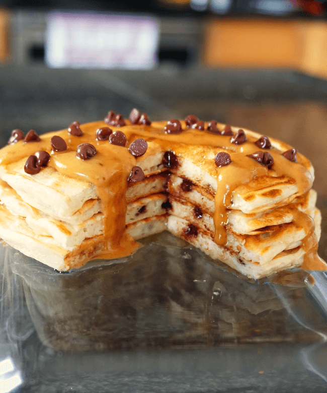

Protein pancakes

Description
Protein pancakes made from oat flour and a blend of whey and casein protein for a high protein breakfast option. You can prep the dry
ingredients in advanced and have these ready to go quickly each morning.
Ingredients
- 50/50 whey/casein blend 25g total
- oat flour 20g
- cornstarch 10g
- baking powder 1g
- egg whites 60g
- greek yogurt 75g
- water 25ml
Steps
- Mix all the dry ingredients together so no clumps are present. NOTE: I have tested this with only whey protein and it doesn't turn out as well. Only casein will work
but you may need more water in the batter. The 50/50 blend is best.
- Add in the wet ingredients and mix thoroughly.
- Heat a griddle/skillet on medium heat and spray with oil.
Add the batter and cook for a couple minutes, then flip.